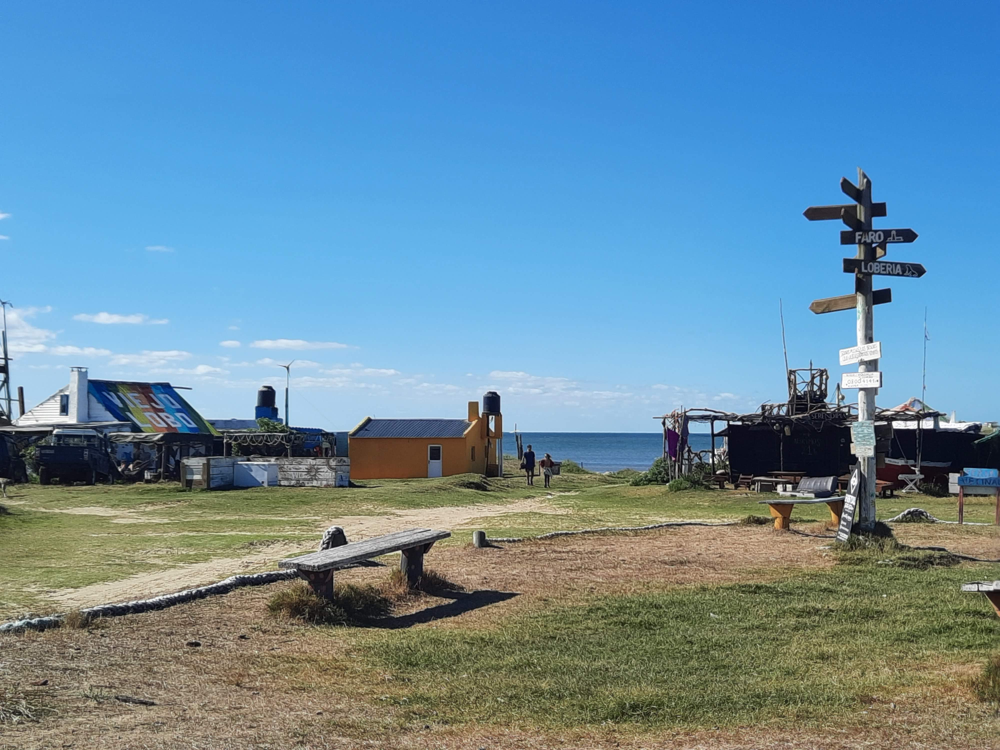

Go Back
Rocha Coast

The coast of the Rocha province in Uruguay is undoubtedly one of the best places in the country to visit. The pace of life here is different from anywhere else I've ever seen and if you enjoy extremely laid back, minimalist beach side living you will fall in love with this area. There is a decently long stretch of coast and I will write about 4 of my favourite towns/ villages along the Rocha coast. Definitely try to plan at least a day trip or two or even spend a few nights in this region.
Cabo Polonio is a very unique beachside village and probably my favourite place to visit in Rocha. It's only accessible by 4x4 and now you must go in big safari style trucks (see the picture below). You used to be able to drive your own 4x4 through the sand dunes and forest. From the ticket office where you will get on the trucks it takes about 20 minutes to get out to Cabo Polonio. As of April 2022 tickets cost about 8 USD for a round trip. You will drive through sand and forest to get to a small village that is perched on a peninsula along the Atlantic Ocean. Arriving by "safari truck" is a fun experience and makes the trip out to Cabo Polonio more exciting than a regular road trip. Once you arrive at the sleepy town you will see many little houses and some businesses like hostels, restaurants and souvenir shops. There aren't really any vehicles here and you just walk around the village. You can go to the beaches around the village. You should also go to the "Loberia" which is where you an spot many sea lions grazing. Also further North along the coast there are some large sand dunes which I recall sliding down on sleds when I was young. Since you can't bring your own cars here anymore though you have to find an alternative way to get there. You could walk but it's a few kilometers. You can visit Cabo Polonio as a day trip from Punta del Este fairly easily. I would also enjoy spending a night or two here as they light the town up with candle light. There are plenty of places to stay and it really offers a unique experience that I haven't seen anywhere else. The other thing unique about this town is that the locals are very determined to maintain it's off the grid feel and have now limited the building of any new businesses. When I was a child the village was about half the size as it was today. It's still very quaint and charming though.
Punta del Diablo is another good option for those who like sleepy beach towns. It has a somewhat similar vibe to Cabo Polonio in ways but is also far more accessible, larger and more developed. You can simply drive here and don't have to take a "safari truck" like at Cabo Polonio. It's a popular town for surfers and many choose to come stay here at one of the many hostels and enjoy the laid back beach lifestyle. It's possible to visit Punta del Diablo, the nearby Fortaleza and even Chui within a day trip from the Punta del Este area if you don't want to spend a night here.
Chuy is an interesting place right on the border between Uruguay and Brazil. The main town itself isn't actually on the beach though there are plenty of beaches nearby. While it's not necessarily the nicest town, it is unique because it's a border town. There are many tax free shops on either side of the main street which divides Uruguay and Brazil. Also for many Uruguayans in the area it's a great place to go shopping as the cost of goods is usually much cheaper in Brazil. The best reason to visit though is to have "Espeto Corrido". This is a traditional Brazilian style of restaurant where they bring many different types of meat such as picanha around from table to table and you can ask them to give you a slice of whatever you want. They also include a massive salad bar with salads, beans, rice, fries and many other appetizers.
Two other laid back beach towns worth mentioning are La Pedrera and La Paloma. I haven't spent much time in these towns but have passed through and enjoyed a nice sunset on the hillside. La Paloma is a little bit bigger than La Pedrera. These towns are accessible by car and are fairly close to Cabo Polonio. These towns felt a little bit more affluent perhaps than places like Punta del Diablo or Cabo Polonio, almost like Jose Ignacio.
I mentioned above about the Espeto Corrido in Chuy. This is a great meal to try as it's not so commonly found in other areas of Uruguay as it's traditionally a Brazilian style of restaurant as to where Uruguay has its own unique parilla style. As this is a coastal area (some of which is quite isolated) there is a lot more seafood and reliance on the ocean. A dish that is quite common in Uruguay is the milanesa. Milanesa is usually a type of meat like beef, chicken or fish that is breaded. I had the best fish milanesa sandwich of my life in Cabo Polonio. I'd highly recommend trying one of these at a beach town in this area. Otherwise you might find other traditional Uruguayan foods like parillas.